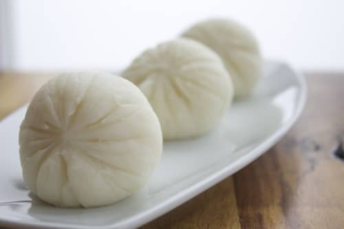

Pounded Yam

Description
Pounded Yam is a staple in many West African homes, but it is not usually eaten by itself,
it is often paired with many delicious African soups, and stews like Egusi soup. If you are new to this food, I’ll explain.
Pounded is quite similar to mashed potatoes but it has a more doughy consistency.
ingredients
Instructions to make pounded Yam
- Peel the skins off the yams and slice them into about 1/2 inch thickness.
- Rinse and place the yams in a pot and add enough water to the level of the Yam.
- Cover and cook the yams for about 30 minutes, checking every 10 minutes or thereabout until the yams are fork tender.
- Put the boiled yams inside the food processor and blend, until it becomes smooth with a dough-like consistency.
- Serve with your favorite soup or stew